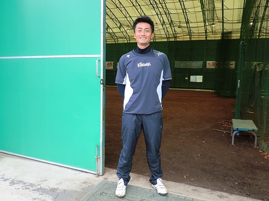
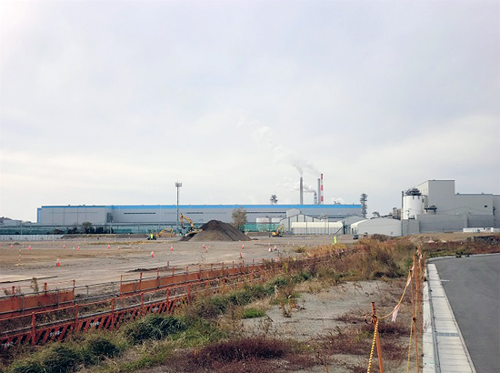

被災地のいま 宮城県・福島県の現状
「被災地のいま」 ～宮城県石巻市～
第77回 2020年1月5日 ―地域とスポーツ―
勝って「石巻ここにあり」を全国にアピール
宮城県石巻市／日本製紙石巻硬式野球部
日本製紙石巻硬式野球部（以下、日本製紙野球部）は創部から34年、全国大会で8強入りの実績を持つ社会人野球チームです。
2011年3月11日、日本製紙野球部は試合のため東京にいました。数日後、石巻に戻ってきた部員たちが目にしたのは津波で壊滅した工場と町の姿でした。前田直樹さん（現監督）は「工場のある辺り、町が一つ無くなっていた」と当時の惨状を語ります。
野球部は活動休止。工場のがれき撤去に従事するかたわら、安否が分からない同僚を探したり、炊き出しの手伝いに行ったりしました。前田さんたちは、そこで町の人から「工場、大丈夫か？」「野球部、頑張れよ」と声を掛けられます。誰もが自分の生活でいっぱいの状況のなか、日本製紙と野球部を心配してくれたのです。「当時は野球を続けられるかどうかさえ分からない時期でしたが、ありがとうございます、頑張りますと答えていました」。
野球部の存続が決まり、練習を再開したのは5月に入ってからでした。石巻のグランドが被災していたため旭川工場に練習の場を移し、「復興のシンボルになる」をコンセプトに再スタートを切りました。
そして震災発生から2年後の2013年、都市対抗野球の東北予選を勝ち抜いた日本製紙野球部は東京ドームで開催された全国大会に出場し、ベスト8の好成績をおさめます。
大会には石巻から約8,000人の応援団が駆けつけ、大漁旗を振って“地元石巻の野球チーム”を応援しました。「皆さん、こんなにも楽しみにしてくれていたんだと嬉しくなりました」と前田さんが話すように、それはあらためて地元の期待の大きさを感じる出来事でした。
日本製紙野球部は、シーズンオフには宮城や福島の小・中・高校生を対象に野球教室を開催し、野球の技術や楽しさを伝えます。なかには高校卒業後、日本製紙に入社した選手もいます。
シーズンオフはメンバーが入れ替わる時期でもあります。「震災を経験している選手も少なくなりました」。前田さんたちは、新しい選手が入ってきた時、必ず震災の話をするそうです。「我々は今、こういう場所で野球をやっている。だからこそ、試合で勝って“石巻ここにあり”を全国にアピールしたいと」。
被災地石巻が復興を遂げ、「野球の石巻」として名をはせる。そんな願いを胸に日本製紙野球部は2020年、再び全国大会出場を目指します。

▲前田直樹さん（日本製紙石巻硬式野球部監督）。「我々は野球しかできないが、野球を通じて地域の皆さんに勇気を与えることができたらと思っています」。

▲日本製紙石巻工場。震災後に営業再開した時は「工場の煙（蒸気）があがるのを見てホッとした」と市民も喜びました。隣りのエリアでは石巻南浜津波復興祈念公園の整備が進んでいます。
2019年3月21日、みやぎ生協はコープふくしま・福島県南生協と組織合同しました。このコーナーのタイトルも「被災地のいま みやぎ生協・コープふくしまから宮城・福島のいまをお伝えします」に変え、福島県の現状についてもお伝えしていきます。
前の記事
第76回「被災地のいま ～宮城県名取市～」（2019年12月05日）